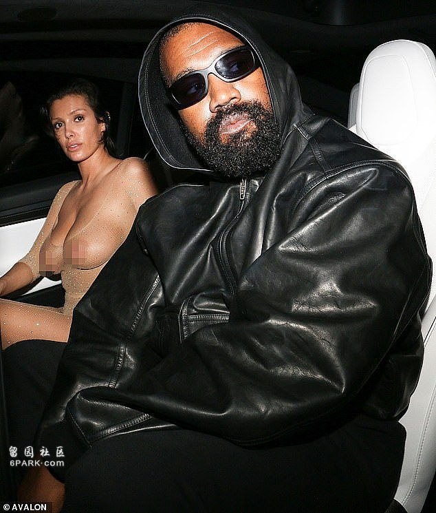
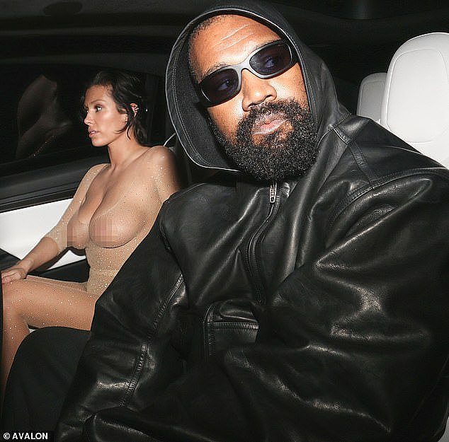

《每日邮报》8月3日报道，侃爷（Kanye West）和澳籍妻子Bianca Censori已结婚近两年，两人近日在洛杉矶一次夜间出行引起了不小的轰动。
现年47岁的侃爷和现年29岁的Bianca一同外出，庆祝经纪人John Monopoly的生日。
Bianca穿了一件裸色透明网裙，展示了她丰满的身材，风格十分大胆。

（图片来源：《每日邮报》）

（图片来源：《每日邮报》）
而与她形成鲜明对比的是侃爷，他全身穿着黑色衣服，包括一件带帽的皮革夹克。
在参观Giorgio Baldi和Chateau Marmont时，侃爷留着胡须，戴着哑光黑色太阳镜。
Bianca的短发则梳至脑后，几缕松散的发丝修饰她的脸型。
Bianca常常被拿来与侃爷的前妻金卡戴珊（Kim Kardashian）比较。
（图片来源：《每日邮报》）
（图片来源：《每日邮报》）
她在丁字裤连体衣外穿上了高腰紧身裤，裸色的装扮配上一双系在脚踝的尖头黑色高跟鞋，自然的妆容突显了她精致的五官。
几天前，一位消息人士透露，尽管Bianca的时尚风格大胆，但她在Chateau Marmont酒店“十分受欢迎”。
这家豪华酒店每晚收费774澳元，一名代客泊车的员工告诉《每日邮报》：“她经常来这里，当外面有很多狗仔队，我就知道她来了，她在这里住了一段时间，有几个月吧。”
最近Bianca还扮演起了继母的角色，陪伴侃爷和他前妻的四个孩子，分别是11岁的North，8岁的Saint，6岁的Chicago和5岁的Psalm。
Advertisements